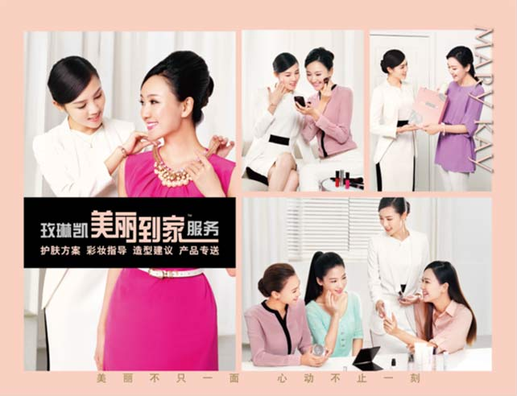

玫琳凯化妆品公司的创立源自一个女性的梦想。公司是建立在特别的价值观及原则的稳固基础之上，它的延续已不再依赖于任何个人。
在玫琳凯公司,我们最强的力量是我们自己的员工。就像我曾经说过的“我们不光从事化妆品事业，同时也在做人的事业。”作为以人为本的公司，我们首要目的是给妇女提供就业机会。同时,通过传授其他妇女美容护理知识来满足她们的需求。换句话说，给妇女们提供丰富她们生活的机会是我们公司存在的全部原因。在公司里我们同样遵循这个原则，我们总是鼓励每个员工充分地展现自己的全部潜力。
没有这些杰出的人，也就不会有如今的玫琳凯化妆品公司。当然，关键是要认识到，每一个公司都有自然人员更替——这是人类生存的特性。一个公司会因为它自身的宗旨而保持强大。或许随着时间的推移，人会变化，产品也会变化。在变化过程中正是公司宗旨决定了其生存和消亡。玫琳凯的经营宗旨建立在三个简单而又极好的理念上：

首要即最重要的宗旨的是黄金法则：要想希望别人如何对待自己，那我们就该如何对待别人。
第二个宗旨是我们坚信正确的优先法则：信念第一，家庭第二，事业第三。
第三个宗旨是相信每个人都具有无限的潜能。我们确认通过赞扬和鼓励，每个人都会走向成功。
多年以前我曾担忧，如果我不再涉及公司事业,公司会怎么样？对于玫琳凯化妆品公司成千上万的职员，我感到一种深切的责任。公司发展得太快了，我要确信没有我的存在，它照样能够成长兴旺。它已帮助了许多美丽的女性，我要知道这些金色机缘还将永存。我带着强烈的意愿留下了一份遗产。我现在知道这份遗产已有保障。公司用我的名字，但它也拥有自己的生命。它的命脉是已成为成千上万女性生命的一部分的公司宗旨。她们体现分享和给予这一宗旨——如此的充分，因此这笔遗产必将永存。